Разбор бизнес-романа · 256 страниц за 25 минут
Не финансы. Не стратегия. Не технологии.
В технологическую компанию на грани развала приходит 57-летняя женщина без опыта в отрасли — и вместо работы увозит команду топ-менеджеров в долину Напа. Роман, из которого выросла самая узнаваемая модель командной работы.
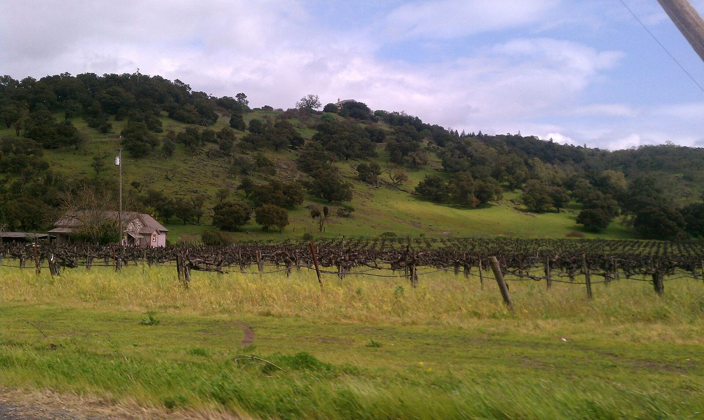
ПРОЛОГ
Халф-Мун-Бей, тихий городок на побережье залива Сан-Франциско. Лучшие менеджеры, лучшие инвесторы, лучшие технологии — и два конкурента впереди.
DecisionTech могла похвастаться самой опытной и высокооплачиваемой командой топ-менеджеров, какую можно вообразить. Осторожные венчурные фонды наперебой предлагали деньги. Талантливые разработчики слали резюме ещё до того, как компания сняла офис.
Это было почти два года назад — немалый срок для высокотехнологичной отрасли. После безоблачных первых месяцев начались срывы сроков. Неожиданно уволились несколько ведущих специалистов. Ухудшился моральный климат.
Менеджеры достигли совершенства в искусстве подставлять друг друга. Дух единства и товарищества сменила нудная обязаловка. Любая работа затягивалась, качество падало. О DecisionTech в Долине уже пошла слава как об одном из самых неприятных мест работы.
Совет директоров попросил 37-летнего Джефа Шенли, директора и одного из учредителей, оставить пост CEO. Ему предложили стать директором по развитию — и он согласился на понижение, не желая отказываться от денег, на которые мог рассчитывать при выходе компании на IPO. Три недели спустя на работу приняли Кэтрин.
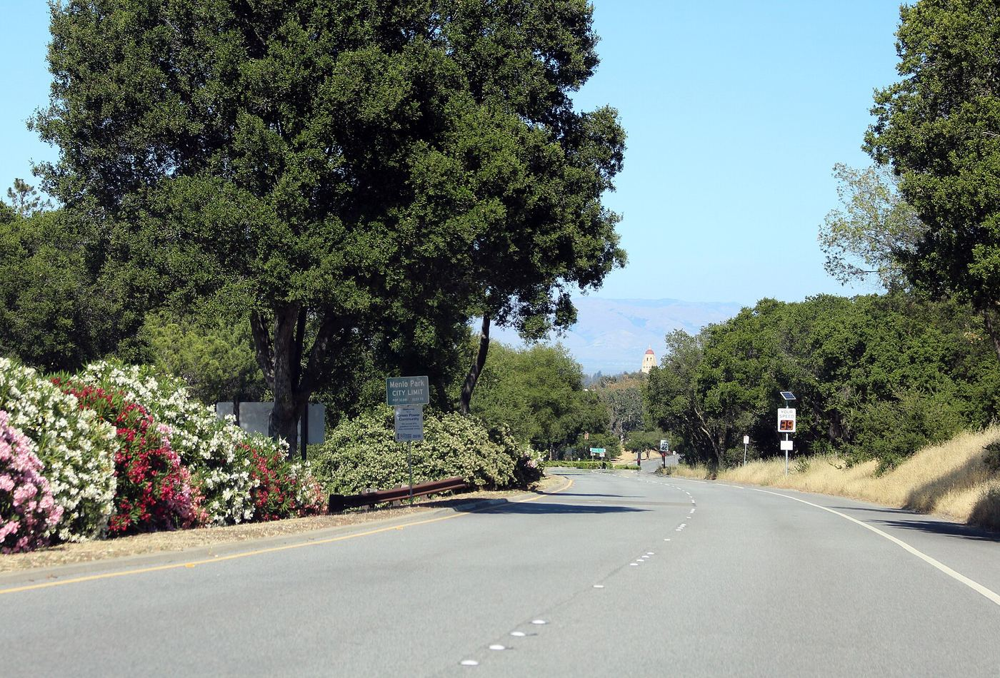
Добейтесь того, чтобы все сотрудники вашей компании смотрели в одном направлении, и вы победите в любой отрасли, на любом рынке, всегда и везде.Друг автора, основатель компании с миллиардными прибылями — из предисловия
«Не финансы. Не стратегии. Не технологии. Командный дух остаётся главным конкурентным преимуществом, потому что это большая редкость».
Ленсиони сразу снимает романтику: совместная деятельность людей, у каждого из которых свой характер и свои недостатки, затруднена по определению. Создание сильной команды возможно — но это болезненный процесс, и успех приходит только к тем, кто в кропотливом ежедневном труде преодолел слабости, свойственные человеческой природе.
Герой
Совет директоров так и не смог договориться, какие именно качества Кэтрин Питерсен неприемлемы для DecisionTech. Их было слишком много.
Ей было 57 лет — по меркам Кремниевой долины почти старуха. Опыта в высоких технологиях у неё не было, если не считать членства в совете директоров. Карьера прошла в оперативном менеджменте совсем других отраслей — в частности, в автомобилестроении.
Она начала военнослужащей, вышла замуж за школьного учителя, который заодно тренировал баскетбольную команду, вырастила троих сыновей и сама несколько лет проработала учительницей. В 37 лет поступила в трёхлетнюю школу бизнеса в Хейворде — не Гарвард и не Стэнфорд — и окончила её на семестр раньше срока. В 54 вышла на пенсию.
Председатель много лет следил за её карьерой. Меньше чем за пять лет она стала исполнительным директором единственного в районе Сан-Франциско автозавода — совместного американо-японского предприятия — и превратила его в одно из самых успешных производств в стране.
У неё был удивительный дар создавать команды.Патрик Ленсиони о Кэтрин
Через две недели сомнения менеджеров превратились в уверенность: Кэтрин для этой работы не подходит. Председатель начал думать, что придётся предложить ей отставку — и уйти самому.
«Кажется, тебя пригласили строить новые мосты, а не сжигать старые», — сказал председатель, когда Кэтрин потребовала от технического директора отменить встречу с клиентом ради выезда в Напу.
Кэтрин ответила напоминанием, которое стало осью всей книги: «Мой муж сравнивает слабую команду со сломанной рукой или ногой. Команда, как и кость, должна срастись, а это процесс болезненный. Более того, кость порой приходится вновь ломать, если она срослась неправильно. А это ещё хуже, потому что делается преднамеренно».
— Сколько человек в команде ты собираешься сломать, чтобы она срослась?
— Это я буду знать к концу месяца.
Расстановка
Никто, включая подчинённых, не считал топ-менеджеров DecisionTech командой. При этом по отдельности почти все они были приятными и разумными людьми.
57 лет, из автопрома. Сильная сторона — умение отбрасывать второстепенное и видеть суть. Слабая, по её собственному признанию, — отвратительный публичный оратор.
Блестяще привлекал инвесторов и людей. Вёл совещания «как в учебнике»: повестка заранее, регламент, начало и конец минута в минуту. Его не беспокоило, что на них ничего не решалось.
Признанный в Долине гений брендинга — при полном отсутствии элементарных навыков общения. Привычка выразительно закатывать глаза в ответ на любое замечание. Её не любили больше всех.
Основатель и изобретатель главного продукта, англичанин, степени Беркли и Кембриджа. На совещаниях открывал ноутбук и молчал — пока кто-нибудь не говорил глупость, тогда следовал язвительный комментарий.
Опытный, загорелый, неизменно вежливый, никогда не отказывал в просьбе. И редко выполнял обещанное — зато всегда искренне признавал промах и торжественно извинялся.
Говорил мало и всегда по делу, не жаловался на сверхурочные, переводил разговор, если его хвалили. Единственный, на кого можно было положиться — и чей потенциал был явно недоиспользован.
Вникала во все детали и экономила деньги компании как свои собственные. Считала своим недостатком чрезмерный для отрасли консерватизм.
Переехал с семьёй из Среднего Запада на должность, обязанности которой уже были розданы другим. Не жаловался вслух, но считал себя единственным достойным кандидатом на роль CEO.
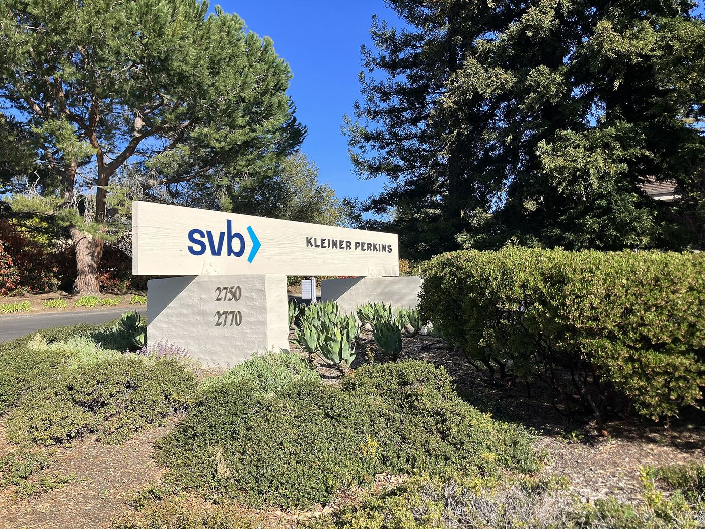
Никто не проявлял откровенной враждебности и даже не спорил — однако явственно ощущалось внутреннее напряжение. Решения казались обречёнными, дискуссии вертелись вокруг пустяков, беседа не клеилась. Присутствующие откровенно ждали окончания совещаний.
Именно отсутствие конфликтов Кэтрин прочитала как симптом. «О том, что вам не хватает доверия, я сужу по отсутствию конфликтов во время совещаний».
Модель
Пороки часто рассматривают как отдельные проблемы, каждую из которых можно устранить независимо. На самом деле они образуют взаимосвязанную модель — и если команду поразил хотя бы один, это может погубить всё.
Слева — сам порок, справа — то, что за ним стоит. Схема читается снизу вверх: каждый следующий уровень держится на предыдущем. Именно так Кэтрин рисовала её на белой доске в конференц-зале в Напе, добавляя по строчке за раз.
«Всё очень просто, скажете вы. Так и есть — во всяком случае теоретически. На практике всё оказывается гораздо сложнее хотя бы потому, что от каждого требуются железная дисциплина, самоотдача и настойчивость, которыми наделён далеко не каждый».
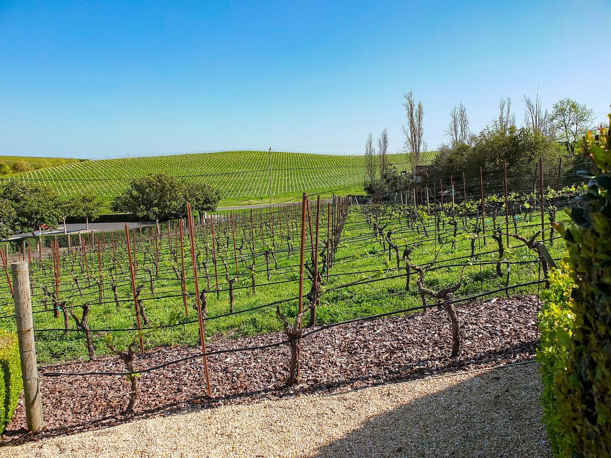
ПОРОК 1 · ОСНОВАНИЕ
В основе — уязвимость. Не «я уверен, что коллега справится», а «я не боюсь при нём ошибиться».
Слово «доверие» используется так часто, что превратилось в штамп — наподобие счастливого детства или вечной любви. Поэтому важно определить, что именно имеется в виду.
В контексте команды доверие — это убеждённость в том, что действия коллег диктуются благими намерениями, поэтому не надо бояться и защищаться. Фигурально выражаясь, члены команды не должны ждать от коллег удара в спину.
Есть более распространённое толкование: уверенность в человеке, способность предсказать его поведение по прошлому опыту. Можно быть уверенным, что тот, кто всегда справлялся, справится и сейчас. Но для настоящей команды этого недостаточно.
Нужно, чтобы её члены не опасались демонстрировать друг другу свою уязвимость: слабости, отсутствие навыков, проблемы в общении, ошибки — и открыто просили о помощи.
Люди, получая образование и продвигаясь по службе, приучаются конкурировать с каждым из коллег и стараются превзойти их даже в мелочах. Борьба против всех превращается почти в инстинкт, от которого практически невозможно избавиться. Команды, лишённые доверия, тратят массу времени на выяснение отношений и сведение счетов; текучесть персонала в них высокая.
Руководитель задаёт каждому несколько неличных вопросов о жизни: братья и сёстры, место рождения, детские трудности, хобби, первая работа, самая плохая работа. Люди начинают видеть в коллегах не конкурентов, а просто людей.
от 30 минутКаждый называет, какой вклад в общее дело внёс каждый коллега и в чём тому стоит либо активизироваться, либо остановиться. Обсуждают по очереди, начиная с руководителя. Высказаться должны все.
от 60 минутОписания личностных и поведенческих предпочтений — Ленсиони чаще всего использует опросник Майерс-Бриггс. Ценность в беспристрастности: все типы разные, но ни один не лучше другого. Нужен квалифицированный ведущий.
от 4 часовКоллеги дают друг другу чёткую оценку действий. Метод рискованнее предыдущих. Главное — объективность и неформальный характер: субъективная обратная связь превращается в инструмент интриг и манипуляций.
Перетягивание каната и корпоративные пикники «уходят в прошлое, и туда им и дорога». Их достоинства далеко не всегда проявляются в рабочей обстановке. Годятся только как дополнение к серьёзной работе, а не вместо неё.
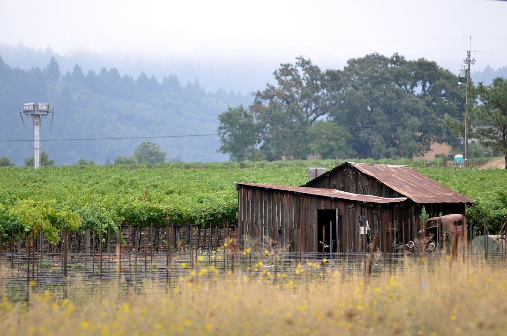
Главное, что может и должен сделать лидер, — первым продемонстрировать свою уязвимость. Порой для этого требуется рискнуть потерять лицо, чтобы побудить подчинённых к такому же риску.
И ещё: уязвимость лидера должна быть подлинной. Один из самых быстрых способов утратить доверие — изображать беззащитность, чтобы манипулировать эмоциями окружающих.
В Напе Кэтрин попросила каждого назвать свою сильную и слабую стороны — и начала с себя: «Мой главный недостаток в том, что я не умею выступать на публике. Я отвратительный оратор».
Ник признался в высокомерии. Джен — в чрезмерном консерватизме. Джеф неожиданно сказал: «Я ужасно боюсь поражений. Поэтому всё проверяю и перепроверяю и стараюсь делать сам… И я думаю, именно из-за этого наша компания терпит поражение, а я больше не директор DecisionTech».
Мартин признал, что ему трудно с людьми: «Неужели я произвожу такое впечатление? Это ужасно. Я и не знал…»
И только Майки прочла по бумажке: сильная сторона — знание рынка, слабая — финансы. «Все молчали. Облегчение от того, что она не сказала ничего неприятного, и разочарование из-за откровенной фальши».
Доверяя друг другу, члены команды создают возможности для конфликтов: они не боятся вступать в открытую, подчас излишне эмоциональную дискуссию, потому что знают — их не накажут за слова, которые в другой команде сочли бы обидными.
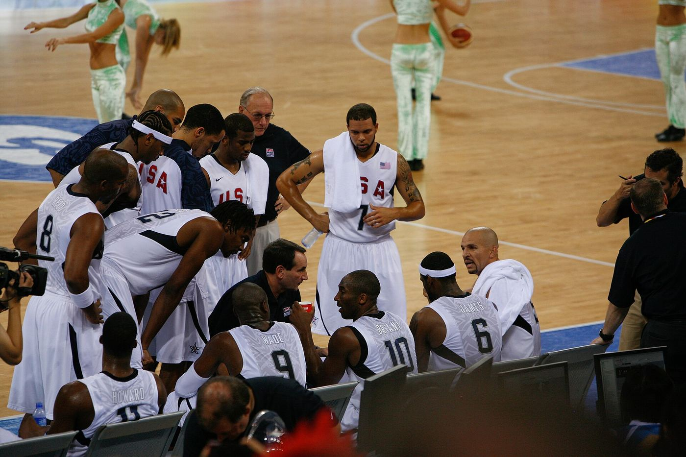
ПОРОК 2
Сторонний наблюдатель вполне может принять конструктивный конфликт за банальную ссору. Разница в том, что обсуждаются идеи, а не люди.
Любые длительные взаимоотношения для своего развития требуют конструктивного конфликта. Это относится к браку, партнёрству, дружбе и, конечно, к бизнесу.
Чем выше вы поднимаетесь по служебной лестнице, тем больше встречаете людей, тратящих невероятное количество сил на то, чтобы избежать открытого обсуждения, жизненно необходимого любой сильной команде.
Продуктивный конфликт нужно отличать от деструктивного соперничества и интриг. В конструктивном обсуждаются только концепции и идеи — и ни в коем случае личные качества участников. При этом ему могут быть свойственны накал страстей, повышенный тон и взаимные упреки.
Участники быстро и всесторонне обсуждают вопрос, и после дискуссии у них не остаётся неприятного осадка — есть только желание перейти к следующему.
Многие, избегая конфликта, объясняют это стремлением к эффективности. Хотя как раз конфликт способен по-настоящему сэкономить время.Патрик Ленсиони
Из-за страусиной позиции приходится по многу раз возвращаться к одним и тем же вопросам. Руководители — противники конфликта обычно просят высказывать мнения в частном порядке и не выносить проблему на общее обсуждение. В результате решение откладывается, а проблема не решается.
Выбранный (иногда назначенный) человек, чья задача — извлечь на свет скрытые разногласия и заставить их обсудить. Нужны мужество, уважение коллег, объективность и твёрдость: нельзя прекращать обсуждение, пока не будет полной ясности.
Дождаться момента, когда спорящие почувствуют дискомфорт, прервать их и напомнить, что спор необходим. А когда дискуссия закончится — сказать, что этот конфликт был полезен и избегать его в дальнейшем не следует.
Инструмент, разработанный специально для конфликтных ситуаций: помогает понять естественные реакции разных людей на конфликт и выбрать подходящую модель поведения.
Самое трудное — преодолеть естественное желание уберечь людей от стресса. Лидер, который искусственно устраняет разногласия, напоминает чересчур заботливого родителя, оберегающего детей от ссор: ребёнок вырастает, не научившись ни постоять за себя, ни выходить из конфликта.
Нужно продемонстрировать самообладание и позволить команде самой прийти к решению, каким бы тяжёлым ни был этот путь. Многим руководителям кажется, что раз возник конфликт — значит, они не справились с обязанностями. Это не так.
Спустя месяц Ник и Джен схлестнулись через стол из-за бюджета — едва не доходя до рукопашной. Когда аргументы кончились, Джен с досадой сказала: «Ничего у нас не изменилось! И похоже, дело совсем не в Майки…»
Кэтрин улыбнулась: «Спокойно. Это и есть тот самый продуктивный рабочий конфликт, о котором мы говорили месяц назад. Просто отличный конфликт».
— Продуктивный? Да мы же просто ссоримся!
— Вы не ссоритесь, а спорите. Спорите по существу. Это ваша работа. Если вы её не выполните, то её придётся передать вашим подчинённым, у которых для этого нет ни возможностей, ни полномочий.
Конструктивный конфликт позволяет всем узнать мнения коллег и выработать решение, максимально устраивающее всех. В результате каждый чувствует ответственность за его выполнение.
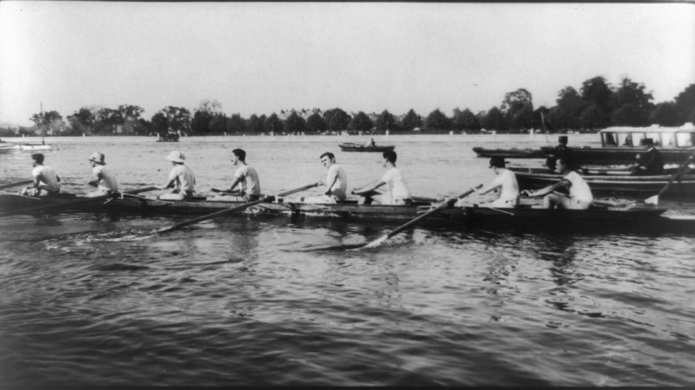
ПОРОК 3
«Каждый гребёт в свою сторону, в результате лодка стоит». Обязательность — это определённость плюс безоговорочная поддержка решения.
Сильные команды вырабатывают чёткие и своевременные решения и исполняют их с одобрения всех участников — включая тех, кто сначала был против. Они уверены, что никто не будет саботировать принятое.
Эффективные команды понимают опасность длительного поиска согласия и умеют решать, когда полное совпадение мнений недостижимо. Разумный человек не станет добиваться, чтобы приняли непременно его предложение, — ему достаточно, чтобы его выслушали и поняли. А если решение всё же невозможно, лидер принимает его лично.
Сильные команды гордятся умением слаженно исполнять решения даже когда нет уверенности, что решение правильное. Старая армейская аксиома: любое действие лучше его отсутствия. Лучше принять смелое решение, ошибиться и столь же смело изменить его, чем упускать возможности.
Сравните с плохой командой, которая бесконечно взвешивает «за» и «против» и тянет с неотложным решением, рассчитывая получить дополнительную информацию. Это можно счесть благоразумным, но на деле оно опасно: парализует команду и порождает сомнения в собственных силах.
Неспособность топ-менеджеров прийти к чётким решениям ведёт к разладу во всей организации. Даже при незначительных разногласиях руководителей подчинённые обнаружат, что разные отделы получили слегка отличающиеся распоряжения.
Небольшие разногласия между руководителями превращаются в непреодолимые пропасти, когда достигают конечных исполнителей.
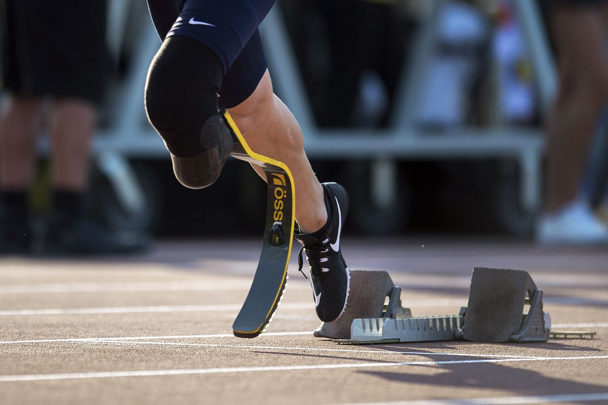
В конце совещания сформулировать основные решения и договориться, что именно довести до сотрудников, клиентов и заинтересованных лиц. Часто выясняется, что решения поняты по-разному — и это нужно уточнить до того, как их начнут исполнять.
10 минутЧёткий срок выработки решения — и поощрение тех, кто помог в него уложиться. Важны промежуточные дедлайны: они заставляют вовремя выявить и устранить несогласованность. Злейший враг такой команды — неопределённость.
Рассмотреть вероятные последствия обсуждаемого решения, а затем — самый плохой вариант развития событий. Помогает понять, что любые последствия можно пережить и они не так страшны, как кажется.
Тренировка решительности в безопасных ситуациях: заставить себя принять решение без дополнительного анализа. Обычно оказывается, что оно не хуже того, которое приняли бы после длительного исследования.
Лидер должен отдавать себе отчёт, что команда может принять неправильное решение, — и всё равно подталкивать её к завершению обсуждения, задавать темп и следить за дедлайном. Чего лидер ни в коем случае не должен делать — поощрять фальшивое согласие и откладывание решений.
Чтобы требовать друг от друга определённого поведения, нужно чётко понимать, чего от тебя ждут. Даже самые ответственные люди не станут спрашивать за то, что не было ясно сформулировано.
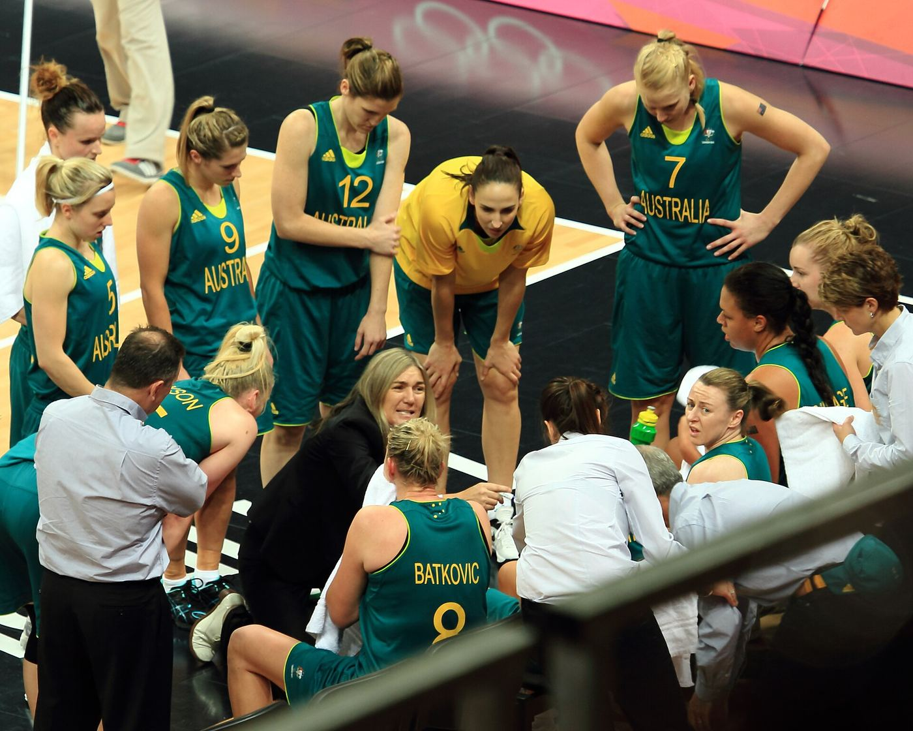
ПОРОК 4
Самый надёжный способ поддерживать высокую эффективность — взаимное давление. Не давление начальника.
Требовательность в команде — это стремление добиваться от коллег определённых моделей поведения и порицать те, что могут нанести урон команде.
Нетребовательность объясняется желанием избежать дискомфорта, который возникает при попытке указать коллеге на его недочёты. Члены сильных команд преодолевают это естественное желание, предпочитая открытое, хоть и чреватое конфликтами общение.
Именно члены дружелюбных команд, особенно близкие друг другу, меньше всего стремятся к требовательности — не хотят портить добрые отношения. Это приводит к обратному результату: в итоге все начинают упрекать друг друга за то, что не оправдали надежд и утратили высокие стандарты.
Взаимная требовательность, наоборот, улучшает моральный климат: так люди демонстрируют уважение друг к другу.
Именно боязнь подвести команду заставляет людей лучше работать.Патрик Ленсиони
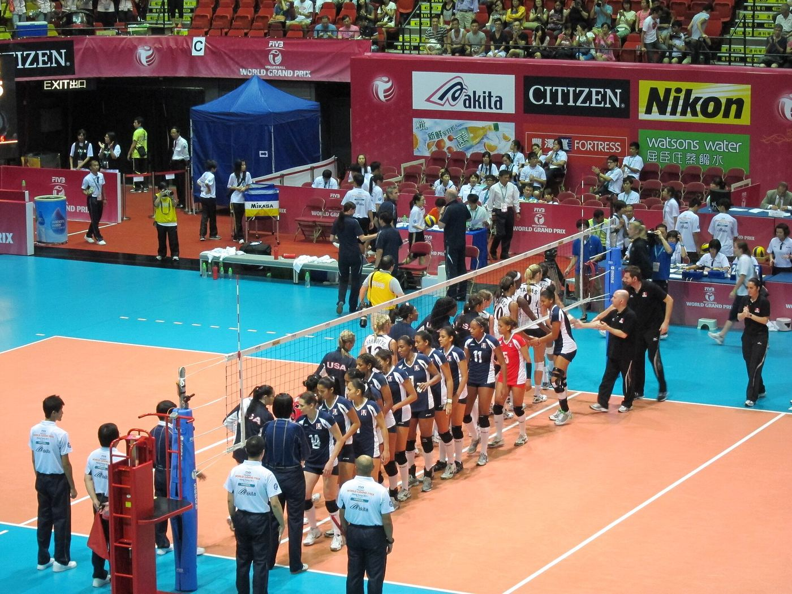
Ясные цели, чётко распределённые обязанности, установленные стандарты поведения. Для требовательности нет ничего хуже неопределённости — и даже когда команда держит график, лидер должен постоянно напоминать о стандартах.
Обязать членов команды регулярно оценивать, как каждый выполняет обязательства и стандарты — устно или письменно. Важно добиться, чтобы это делалось самостоятельно и добровольно.
Отказаться от премий за личные достижения в пользу командных. Тогда молча сносить низкую эффективность коллеги становится невыгодно: это может лишить премии всех.
Самое трудное — решиться передать полномочия взаимного контроля самой команде. Сильные лидеры, сами того не замечая, создают вакуум ответственности: выступая единственным борцом за дисциплину, они позволяют остальным спокойно закрывать глаза на нарушения.
Если культура взаимной требовательности создана, лидер оставляет себе роль высшего арбитра — на случаи, когда команда не может прийти к решению. И такие случаи должны быть исключением, а не правилом.
Чтобы объяснить команде увольнение Майки, Кэтрин рассказала историю, которую не любит вспоминать. На первой руководящей должности у неё был подчинённый — назовём его Фред — расторопнее и смышлёнее всех. Остальные его терпеть не могли. Кэтрин выслушивала жалобы, но решила, что коллеги просто завидуют.
Отдел работал всё хуже, и она перекладывала на Фреда всё больше. Наутро после бессонной ночи она приняла первое важное управленческое решение.
— Вы уволили его, — предположил Джеф.
— Нет. Я повысила его в должности.
Через две недели трое из семи аналитиков ушли. Начальник вызвал Кэтрин и на следующий день тоже принял важное управленческое решение — уволил её.
— Вы утверждаете, что поведение одного Фреда снизило производительность отдела вдвое?
— Нет, дело не в поведении Фреда. Дело в моём отношении к его поведению. Меня уволили за дело.
Если люди не радеют за общее дело, они уделяют больше внимания собственным делам и карьере. Именно с нетребовательности и отсутствия взаимного контроля начинается безразличие к общему результату.
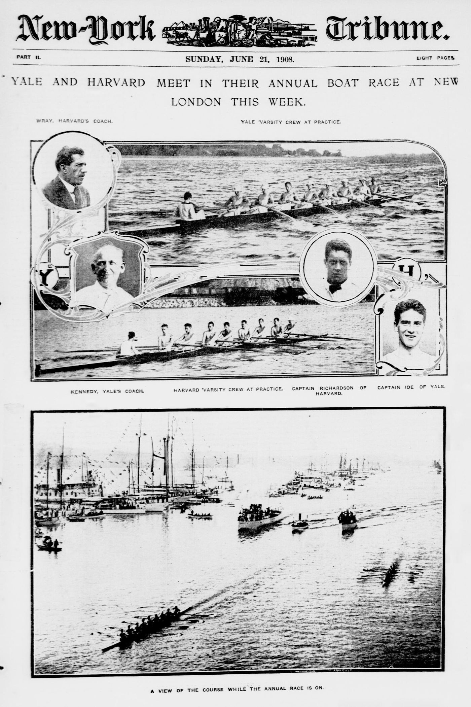
ПОРОК 5 · ВЕРШИНА
Ни высокое доверие, ни конструктивные конфликты, ни требовательность не компенсируют отсутствия желания победить.
Речь не только о прибыли. Для корпорации конечное мерило — прибыль; для команды таким мерилом будет достижение целей, которые ставят перед ней лидеры.
Чтобы отслеживать свою эффективность, команда должна знать свои цели, критерии оценки и конечный результат. Но есть две вещи, на которых команды концентрируются вместо результата.
Некоторым достаточно просто ощущать свою принадлежность к группе. Результат желателен, но без особых жертв. Этому особенно подвержены некоммерческие организации, политические движения, академические учреждения и престижные компании: они процветают за счёт принадлежности к числу особых.
Люди стремятся улучшить собственное материальное положение и продвинуться по карьерной лестнице в ущерб общим целям. Хорошая команда добивается того, чтобы коллективный результат стал для каждого важнее личных целей.
Порок кажется самым очевидным — и всё же очень многие команды не обращают внимания на результат. Они живут и работают просто для того, чтобы жить и работать.
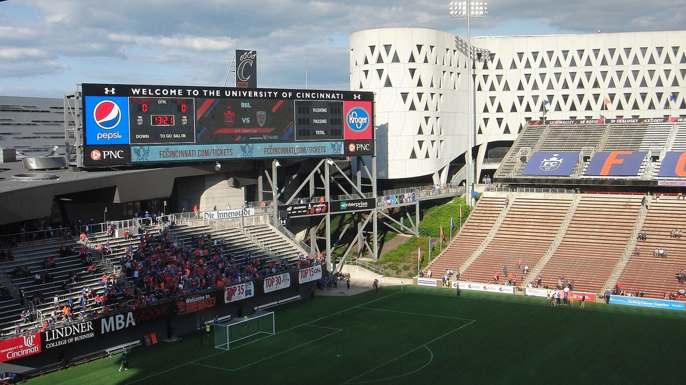
В спорте публично обещать победу опасно — это провоцирует соперника. В бизнесе всё наоборот: команды, публично взявшие обязательство достичь целей, приложат все усилия, чтобы не опозориться. Те, кто невнятно обещает «сделать всё возможное», подсознательно обрекают себя на поражение.
Увязать вознаграждение с достижением конкретных целей. Но одного этого мало: если премировать «за приложенные усилия» при отсутствии результата, команда понимает, что результат, в общем-то, не так уж важен.
Если члены команды поймут, что для лидера есть что-то более важное, чем результат, они воспримут это как разрешение поступать так же. Лидер должен быть бескорыстен и объективен и поощрять только тех, кто внёс реальный вклад в общие цели.
Кэтрин разбила команду на группы по два-три человека и попросила составить перечень результатов, по которым можно судить об успехе — «только не надо включать туда плановые показатели».
За час набралось больше пятнадцати критериев; после объединения похожих осталось семь: доходы, расходы, привлечение новых клиентов, удовлетворение имеющихся, удержание сотрудников, знание рынка и качество продукта. Оценивать решили ежемесячно: раз в квартал — слишком редко, чтобы успеть вмешаться.
И тут же выяснилось главное. Мартин не смог ответить, как идут дела с пиаром: «Это работа Майки». Кэтрин привела спортивную аналогию — тренер, который в перерыве по очереди беседует с каждым игроком с глазу на глаз, а игроки не знают, о чём он говорил с остальными. Это не команда, это сборище единоличников.
«Каждый из вас отвечает за продажу — не только Джей-Ро. Вы все отвечаете за маркетинг — не только Майки. Вы все отвечаете за разработку продукта, работу с клиентами и финансы».
Диагностика
Пятнадцать утверждений из последней главы. Оцените по трёхбалльной шкале, насколько каждое подходит вашей команде. Отвечайте откровенно и быстро.
Ленсиони настаивает: анкету должны заполнить все члены команды, затем все знакомятся с результатами, открыто обсуждают расхождения в ответах и делают выводы. Расхождение само по себе — уже материал для разговора.
Подсчёт идёт прямо в браузере, ничего никуда не отправляется и нигде не сохраняется.
Ответьте на все пятнадцать утверждений — счёт по каждому пороку появится здесь.
| Сумма по пороку | Что это значит | Что делать |
|---|---|---|
| 8–9 | Этого порока у вас нет | Не расслабляться: даже лучшие коллективы неизбежно подвержены характерным порокам команды |
| 6–7 | Существует угроза развития | Взять соответствующие упражнения из раздела этого порока и поставить их в календарь |
| 3–5 | Надо срочно принимать меры | Начинать снизу пирамиды: пока нет доверия, работа над конфликтами и обязательностью бессмысленна |
Фактор времени
Кэтрин понимала, что члены сильной команды должны много времени проводить вместе: только так быстро устраняются межличностные проблемы и налаживается общение.
Её команда проводила на выездных совещаниях восемь дней в квартал — чуть меньше трёх дней в месяц. Ленсиони замечает: хоть это и немного, большинство команд топ-менеджеров не хотят проводить вместе даже столько времени, предпочитая заниматься, как они говорят, «настоящей работой».
Каким бы сложным ни казалось создание сплочённой команды, на самом деле всё очень просто.Патрик Ленсиони, начало последней части книги
Выработка плана на предстоящий год и рабочие встречи топ-менеджеров. Бюджет, стратегические цели, программы подготовки персонала, текущие вопросы.
3 дня · выездноеПересмотр глобальных целей, финансовый обзор, стратегия, производительность работников, назревшие проблемы, организация команд.
2 дня · выездноеПромежуточные итоги, объёмы продаж, работа с клиентами, тактические и оперативные вопросы.
2 часа · офисВажные текущие вопросы, на которые не хватает времени на еженедельных встречах.
2 часа · офис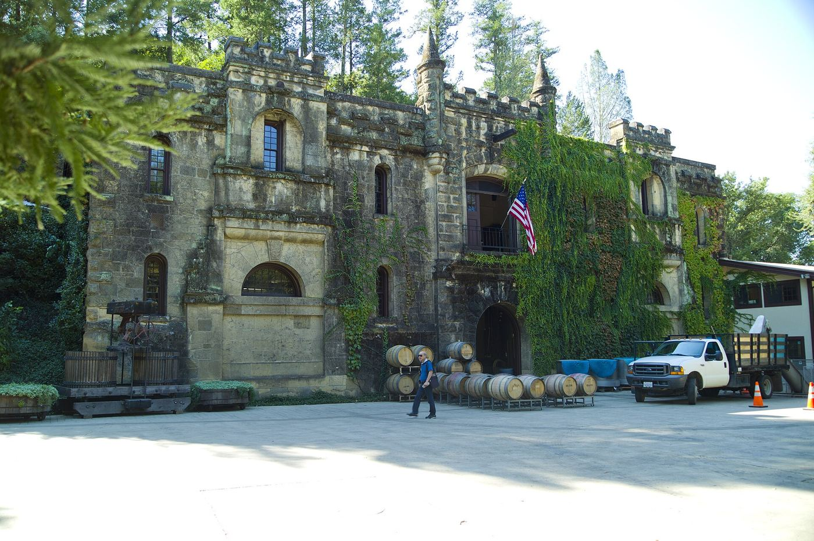
РАЗВЯЗКА
Один человек ушёл, один сам попросил о понижении, а компания отказалась продаваться.
Кэтрин не уволила её. Она сказала: «А я и не увольняю вас. И вам не придётся уходить. Но вам придётся полностью изменить своё поведение. И как можно скорее». И добавила: «Хотя, честно говоря, не думаю, что вам этого хочется».
Майки ушла, выторговав выходное пособие. А реакция команды застала Кэтрин врасплох: вместо облегчения — тревога. Джен сказала: «Конечно, Майки была с характером, но ведь она отлично работала. Может, нам следовало проявить больше терпения?» Именно тогда Кэтрин рассказала историю про Фреда.
Через три месяца выяснилось, что компания Green Banana — та самая, которую DecisionTech сама хотела купить, — теперь хочет купить их. Предложение было «намного больше, чем мы стоим на самом деле». Совет директоров отказался решать за команду.
Первым заговорил Мартин — тот самый молчаливый технический директор с ноутбуком: «К чёрту! Я ни за что не откажусь от нашей команды и не продамся компании с недозрелым названием!»
Джеф объяснил позицию совета: «Они хотят посмотреть, хватит ли у нас духу постоять за себя. Хотят знать, хотим ли мы остаться собой. Может, у нас кишка тонка».
Проголосовали против все. Джен закрыла обсуждение фразой: «Нет зелёным бананам!»
В следующем году DecisionTech значительно увеличила объём продаж и достигла запланированных показателей прибыли за три квартала вместо четырёх. Наряду с ростом производительности компания продемонстрировала резкое снижение текучести персонала и улучшение морального климата — при том что был период, пусть и кратковременный, значительного спада.
Показательна деталь: в этот период не только подчинённые подбадривали Кэтрин, но и председатель совета лично звонил, чтобы поддержать её и отметить прогресс в формировании команды.
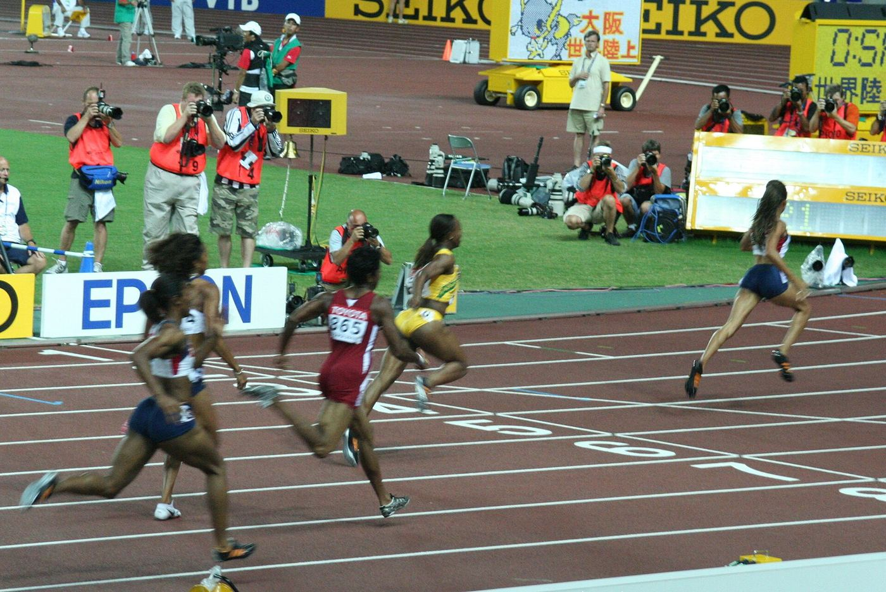
Когда в компании стало больше 250 человек, Кэтрин решила сократить число подчиняющихся ей напрямую: «чем крупнее компания, тем меньше должно быть руководящее звено». Джеф Шенли — основатель, бывший CEO и член совета директоров — перешёл в подчинение к Нику.
Команда была потрясена: «Вы понимаете, какой это удар для Джефа? Получается, что его просто понизили в должности».
Кэтрин ответила: «Ребята, это была идея самого Джефа». Он сказал, что так будет лучше и для компании, и для команды.
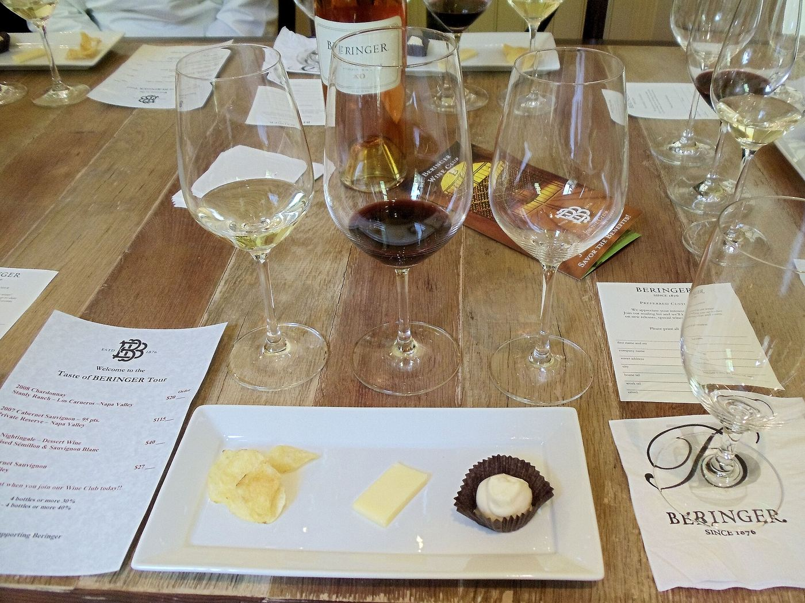
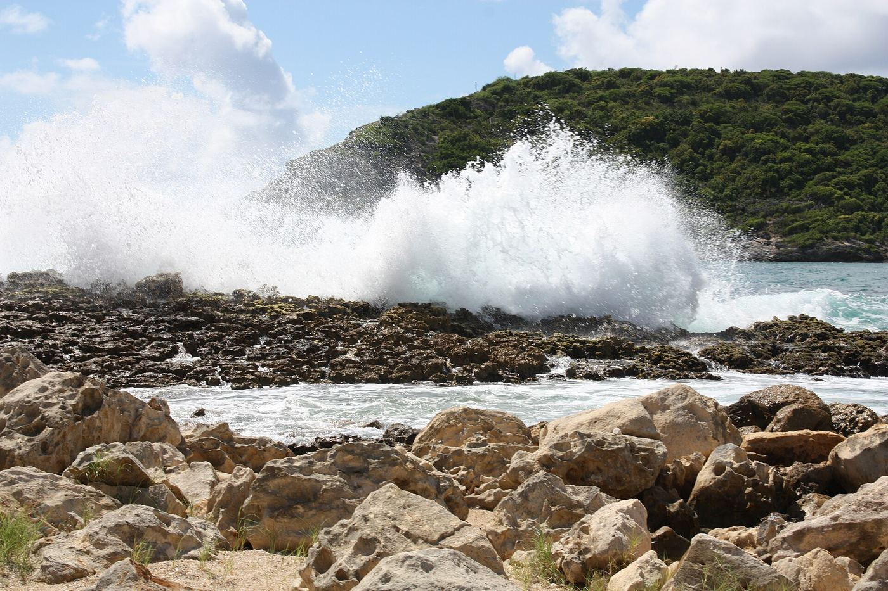
Я видела много команд, которые скатились к прежнему состоянию, добившись гораздо более впечатляющих успехов.Кэтрин — команде, которая только что себя похвалила
Особые случаи
Ленсиони заканчивал книгу, когда произошли события 11 сентября 2001 года. Абстрагируясь от ужаса трагедии, он посчитал нужным описать действия спасателей как пример командной работы.
Пожарные бригады, скорая помощь, полиция Нью-Йорка, Вашингтона и Пенсильвании показали, что группы людей, действующих согласованно, способны достигать результатов, недоступных группам без командного духа.
Логика та же, что и во всей книге, только доведённая до предела. Эти люди проводят вместе очень много времени — и между ними возникают узы доверия едва ли не крепче семейных. Это позволяет принимать правильное решение, когда дорога́ каждая секунда. Они не раздумывая бросятся на помощь коллеге — и от него потребуют того же, ведь на кону жизнь. И всех объединяет одна общая цель.
«Главный тест для команды — общий результат. Если учесть десятки тысяч спасённых в Нью-Йорке и Пентагоне, нет никаких сомнений, что команды, которые действовали там, невзирая на смертельный риск, были не просто отличными — они были великими».
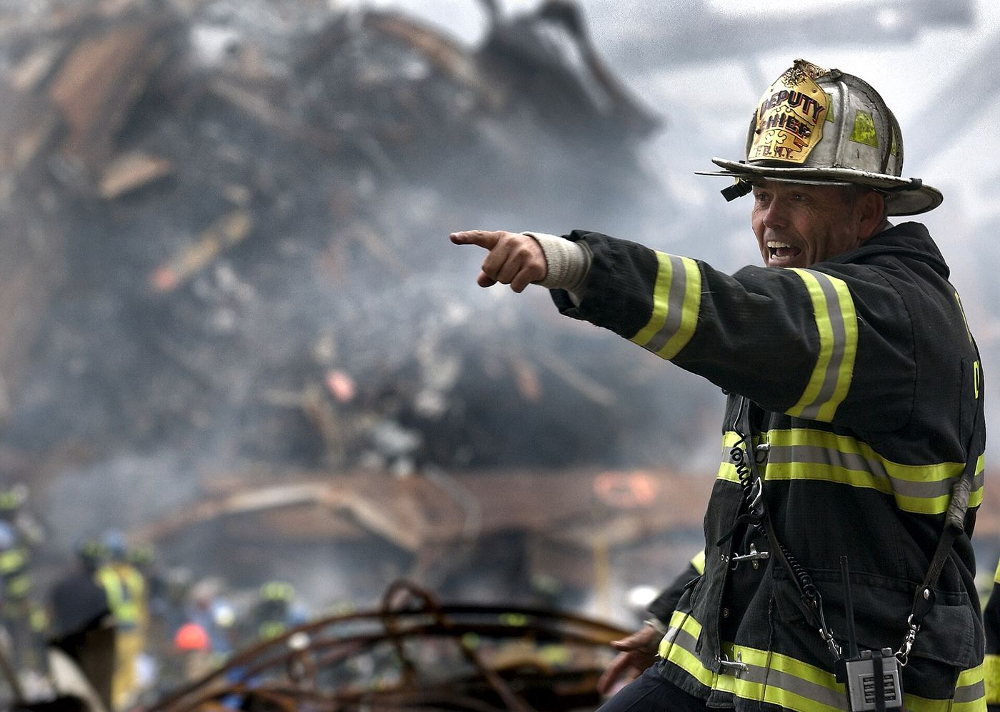
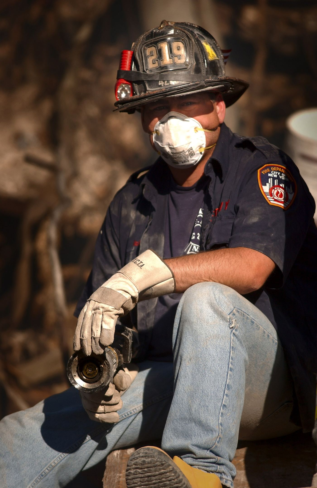
Что забрать себе
Пирамида читается только в одном направлении. Работать над конфликтами и обязательностью, пока нет доверия, — потеря времени.
Не «я уверен, что он справится», а «я не боюсь при нём ошибиться и попросить о помощи».
Именно по тишине на совещаниях Кэтрин поставила диагноз. Тихие совещания означают, что настоящий разговор идёт где-то ещё.
Накал, эмоции и повышенный тон допустимы. Переход на личные качества — нет.
Разумный человек не требует, чтобы приняли именно его предложение. Ему нужно, чтобы его выслушали и поняли. Единогласие — ложная цель.
Лучше принять смелое решение, ошибиться и столь же смело изменить его, чем упускать возможности в ожидании полноты информации.
Десять минут в конце встречи на формулировку решений и договорённость, что именно донести до сотрудников. Часто выясняется, что все поняли по-разному.
Если единственный борец за дисциплину — лидер, возникает вакуум ответственности, и остальные закрывают глаза на нарушения.
Вы все отвечаете за продажи, маркетинг и продукт — не только их руководители. Иначе это не команда, а сборище единоличников.
Первым показывает уязвимость, первым не уходит от конфликта, первым ставит результат выше собственного статуса. Всё остальное команда считывает с него.
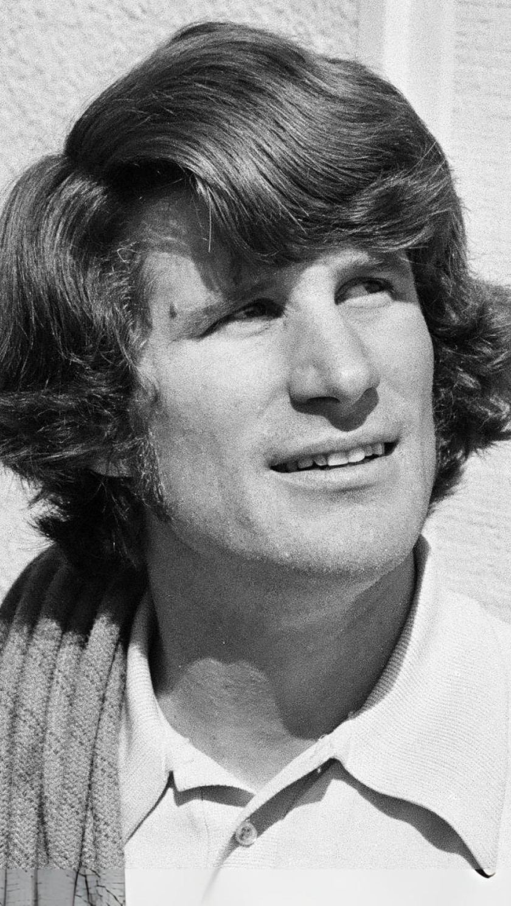
Секрет успеха кроется не в овладении обширной теоретической базой, а в сочетании здравого смысла с высочайшим уровнем дисциплинированности и настойчивости.Патрик Ленсиони, «Вывод»
Словарь
Источники
Патрик Ленсиони. «Пять пороков команды. Бизнес-роман» / пер. с англ. И. Э. Коротенко. — 3-е изд. — М.: Манн, Иванов и Фербер, 2016. — 256 с. ISBN 978-5-00100-204-8. Оригинал: Patrick Lencioni, The Five Dysfunctions of a Team: A Leadership Fable (Jossey-Bass, 2002).
Разбор построен на полном тексте книги: предисловие автора, четыре части романа (Проблемы, Конфликт, Трудный подъём, Сплочение) и пятая часть — «Модель», где Ленсиони даёт развёрнутое описание пороков, упражнения, анкету и раздел о роли лидера. Все цитаты приведены по русскому изданию.
Текст извлечён из PDF (252 страницы), очищен от колонтитулов и номеров страниц и разобран по структуре. Отдельно выделены: полная модель из части V со всеми упражнениями и списками, анкета из пятнадцати вопросов с ключом подсчёта, ключевые сцены романа и прямые реплики персонажей.
Фотографии подобраны к конкретным местам действия и метафорам книги: долина Напа, побережье Халф-Мун-Бей, Сэнд-Хилл-роуд, гребная восьмёрка («каждый гребёт в свою сторону»), командные тайм-ауты, спасатели Нью-Йорка. Все изображения — Wikimedia Commons, в общественном достоянии или под лицензиями Creative Commons.
DecisionTech, Кэтрин Питерсен и остальные персонажи вымышлены — это бизнес-роман, а не хроника. Ленсиони прямо пишет, что рассказ о вымышленной организации нужен, чтобы читатель поставил себя на место героев. Поэтому «результаты» DecisionTech — часть притчи, а не измеренный кейс.
Фотографии иллюстрируют места действия и метафоры книги; на них нет героев романа и нет самой компании.